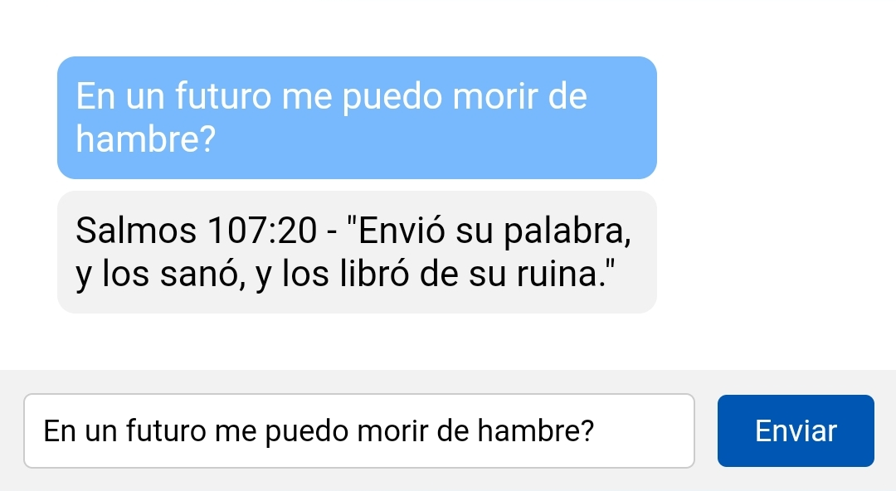
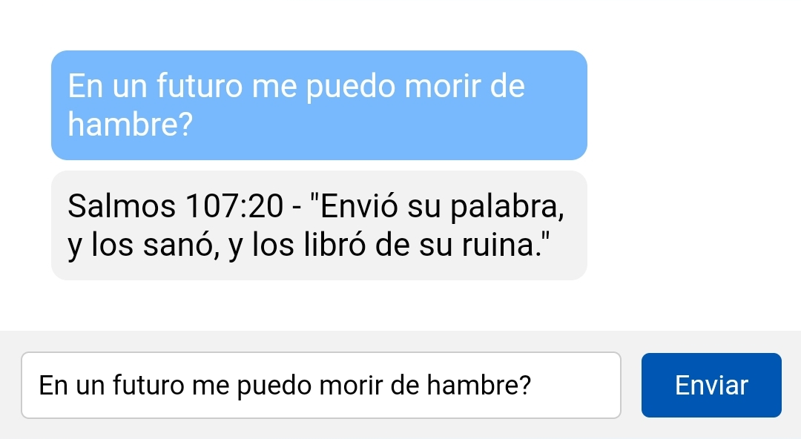

¿Como funciona ésto
Puedes realizar una pregunta y se te va a contestar con un versículo de la biblia.
¿La respuesta es literal?
No, como todo versículo de la biblia, es una metáfora de libre interpretación.
¿Puedo preguntar lo que sea?
Puedes pregutnar lo que quieras, te recomendamos buscar algo relacionado con el amor, el dinero o la salud.
¿Quien está detrás de ésta página?
¿Cuando puedo volver a preguntar?
Puedes realizar una pregunta cada una hora.
 
